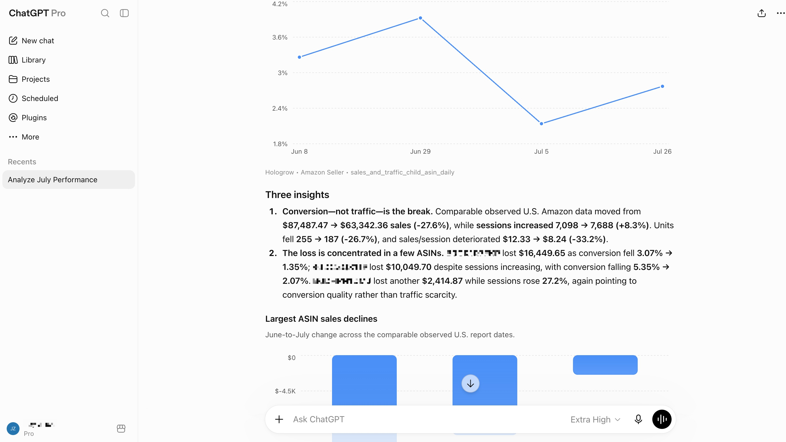

10,000 → 11,000 sessions; 400 → 300 units
Compare complete periods at the same reporting grain
HOLOGROW + CHATGPT
Bring your Amazon sales, ad spend and website performance into the same conversation. With Hologrow, ChatGPT can start from synced business data and help you turn a broad question into a focused review.

View full imageFor business owners and marketing teams reviewing performance
01 / SETUP
Use ChatGPT in a web browser with access to custom MCP apps. The common data walkthrough comes first; then complete the ChatGPT authorization steps below.
Authorize the sources you want to discuss in Hologrow. Check their sync status and reporting dates in Data Explorer.
On ChatGPT web, enable Developer mode under Settings → Security and login. Open Plugins → +, use the Hologrow server URL and select OAuth.
Choose Sign in with Hologrow and allow access. Select the created plugin in a chat and verify connected platforms before asking a business question.
https://mcp.hologrow.ai/mcpFind and load the Hologrow MCP tools if necessary. Then call Hologrow’s list_platforms tool once. Do not call any other Hologrow data tool or any other external service.
Source authorization and AI workspace permissions are required. Initial sync can take time. The Arcade shows the common Amazon connection, not a separate recording for each client.
02 / FROM QUESTION TO OUTPUT
A good ChatGPT business review moves from the headline to the products behind it. Add advertising context only after establishing the store-side change.
BUSINESS REVIEW
The example shows 10% more sessions but 25% fewer ordered units. Unit-session percentage fell from 4.0% to 2.7%. That narrows the review to conversion and product mix; it does not establish the cause.
Which ASINs account for most of the decline, and what happened to their sessions and unit-session percentage?
Illustrative data. Unit-session percentage uses ordered units ÷ sessions and is not an order conversion rate.
The same number can mean different things in different tables. Check the source and definition together.
Compare complete periods at the same reporting grain
Do not infer a catalog-wide issue from one product
Ad-attributed sales and store sales use different definitions
Which ASINs account for most of the decline, and what happened to their sessions and unit-session percentage?
For connected advertising accounts, compare spend, clicks and attributed conversions over aligned periods.
Ask for one conclusion, three supporting observations and the unanswered questions to review with your team.
Suggested checks. Your team decides what to change.
03 / WHY HOLOGROW
Hologrow prepares the recurring data work so the next conversation can begin with a question.
PREPARING DATA YOURSELF
WITH HOLOGROW
04 / CONNECTED DATA
Schema is the data dictionary: the tables, fields and row meaning available to the conversation. Start with the source behind the question and add context when needed.
Explain sales and product conversion changes.
Discuss wholesale operations separately from Seller retail.
Ask whether paid-traffic performance changed with sales.
Review acquisition costs, search terms and attributed results.
Compare website visits and key events with acquisition context.
Bring independent-store orders into a business conversation.
Availability depends on authorization and report coverage. Shopify, Meta Ads, Amazon DSP and Lingxing ERP coverage is expanding; check your account before relying on them.
05 / TRY ASKING
Copy a prompt and add your account, marketplace and reporting dates. Each question depends on the relevant source being available.
Using Hologrow, summarize the latest complete week: the biggest business change, three supporting facts and three questions for our review. Include source dates and separate facts from hypotheses.
Compare available store revenue and Google Ads spend across the same weeks. Is revenue keeping pace with spend? State currency, attribution and data gaps before recommending a review.
Turn this analysis into a short meeting brief: what changed, where the evidence is strongest, what remains uncertain and which person or function should investigate each open question.
06 / SECURITY & CONTROL
Authorize the data connection and keep account operations under your control.
Hologrow stores source connection credentials encrypted. Access follows the Hologrow user who authorizes the AI connection.
Analyze synced records without changing bids, budgets, listings or orders through Hologrow. Review AI conclusions before acting.
Manage and revoke the client’s authorization in AI Platforms when you no longer want it to access your data.
Your AI client and model provider have their own permissions and data policies. Hologrow’s read-only boundary applies to the tools it provides.
07 / QUESTIONS, ANSWERED
Connection details, practical workflows and what to verify before your first analysis.
A custom MCP plugin lets ChatGPT read your Hologrow data after authorization. Connect the source accounts in Hologrow first; the plugin then exposes the synchronized data available to your user.
The documented setup is for chatgpt.com in a web browser. It requires Developer mode and custom MCP app access; the mobile app is not the setup surface described here.
Check your plan and workspace role. A managed workspace may require an admin to create or allow the app. Hologrow cannot enable a ChatGPT feature your account does not have.
For tables already connected and synced through Hologrow, ChatGPT can query the available data through MCP. Additional context outside those sources still needs to be provided or maintained separately.
Yes, when the required accounts and tables are available. Ask for side-by-side comparisons with explicit dates and definitions. Parallel movements do not prove cross-channel attribution or causation.
No. Hologrow provides synchronized data. Check the latest successful sync and available dates in Data Explorer, particularly before interpreting a partial day or a newly connected account.
Hologrow is read-only. ChatGPT can help identify campaigns for review, but Hologrow does not write budget, bid or store-setting changes back to the source platforms.
Remove or disable the app in ChatGPT and revoke the corresponding access in Hologrow AI Platforms. Access is tied to the Hologrow user who authorized the connection.
Choose the source behind the question and connect it through Hologrow.